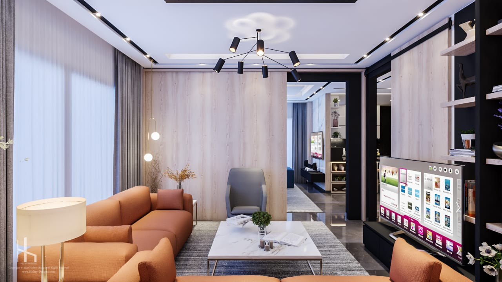
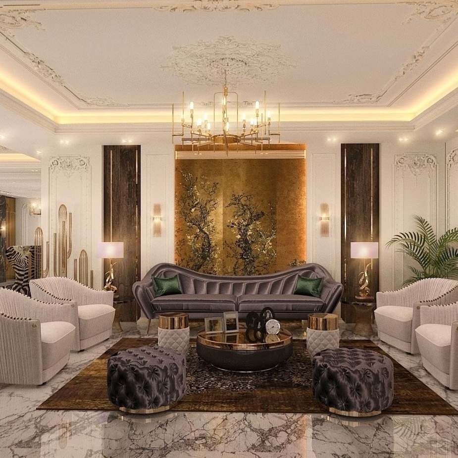
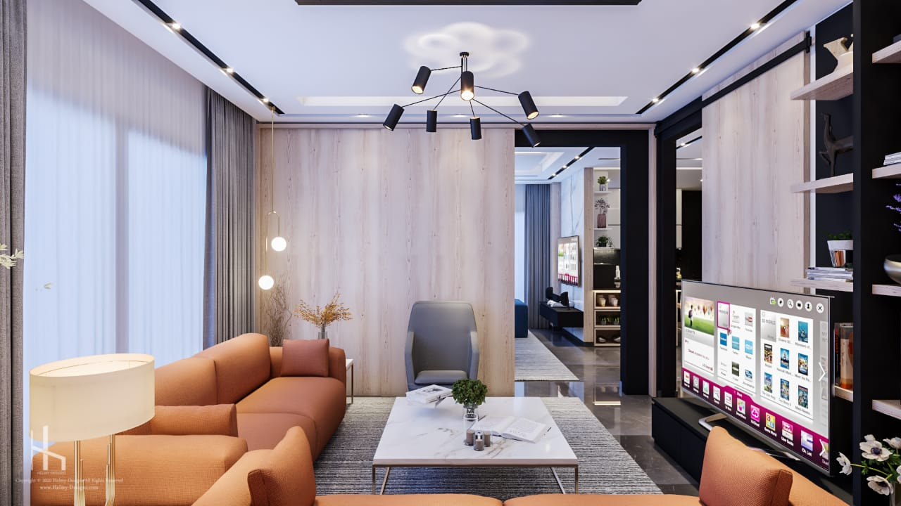
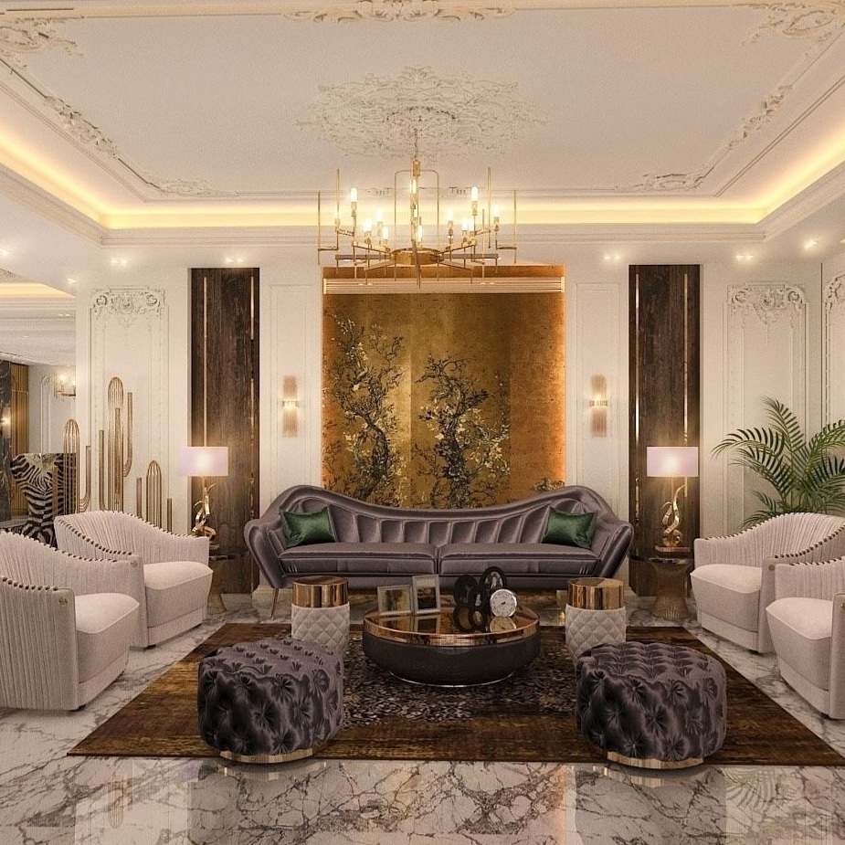
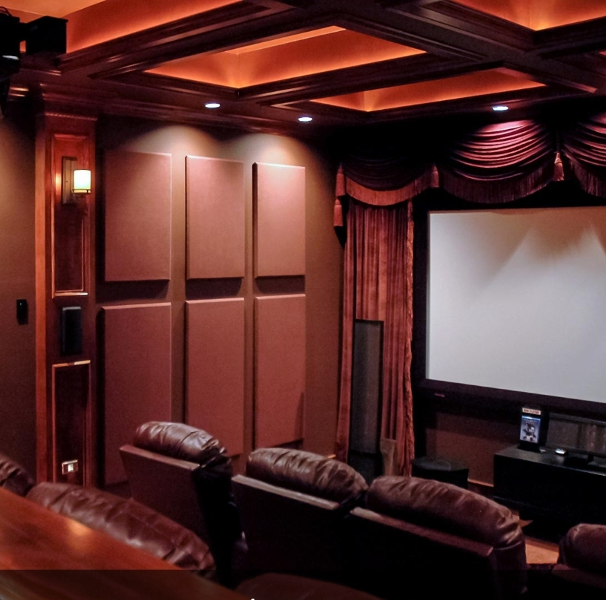
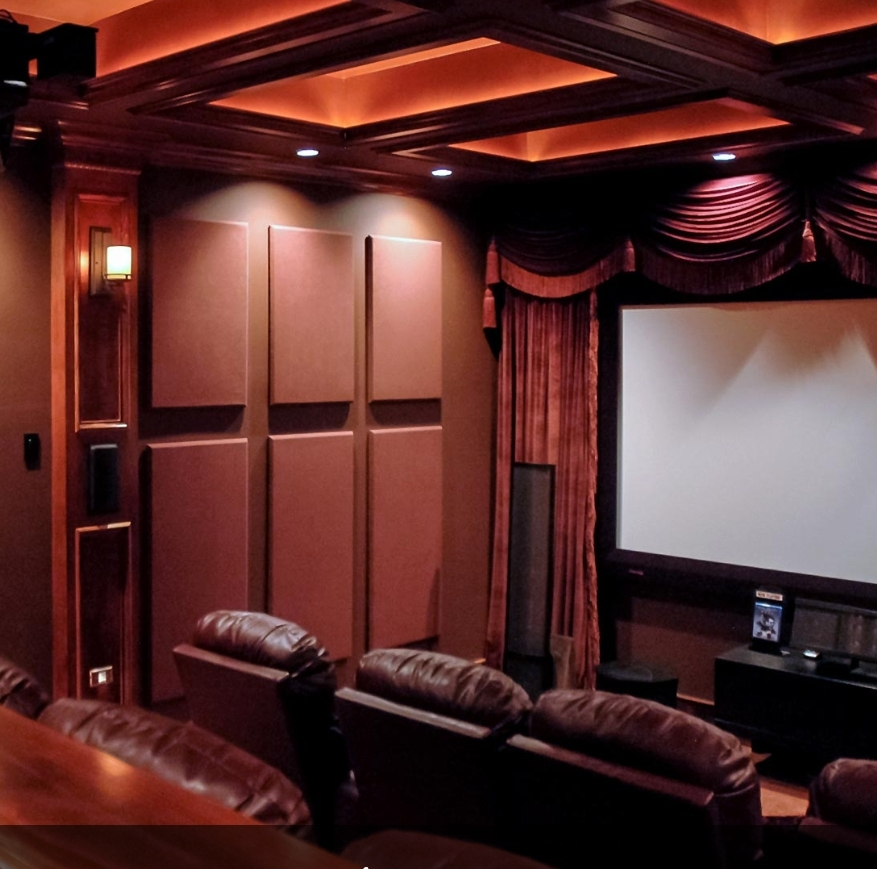
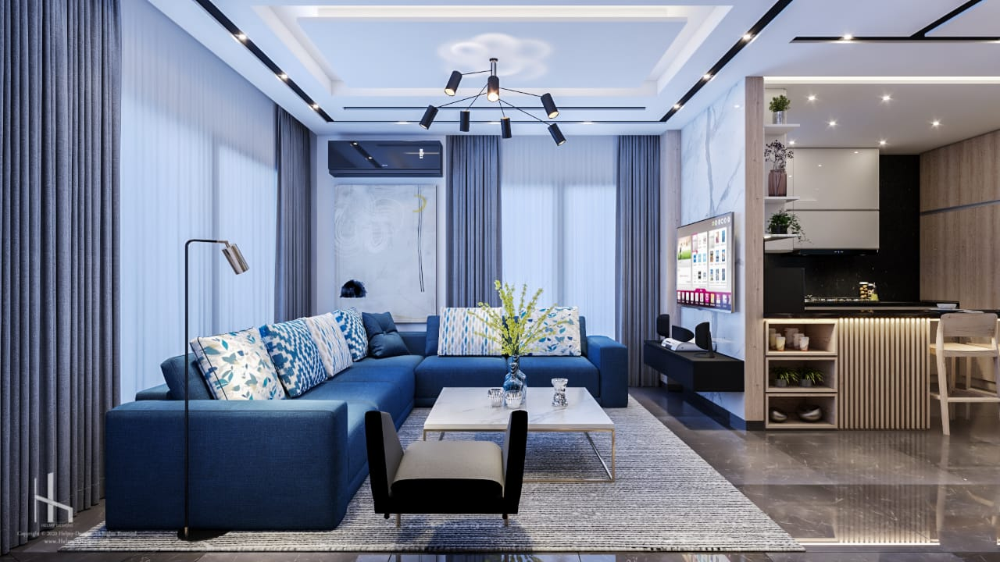
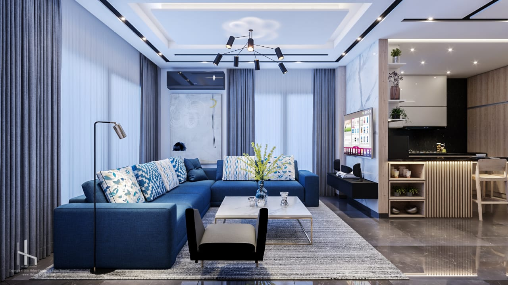

دليل تصنيف الأبواب
المقاومى للحريق
توفر لك تقييمات مقاومة الحريق إرشادات تتعلق بقضايا السلامة. الغرض الرئيسي من هذه التصنيفات هو تقييم متانة المواد المستخدمة لاحتواء الحريق داخل منطقة ما مع الحفاظ على السلامة الهيكلية.
هذه التصنيفات مفيدة أيضًا لأنها تساعد في تحديد ما إذا كان الموقع الذي تم تشييده يمكن أن يوفر لشاغليه الوقت الكافي لإخلاء المنطقة. ربما تكون قد لاحظت دقائق أو ساعات كطريقة للإشارة إلى ملصقات تصنيف الحريق على أبواب النار. إنه تصنيف تحمل النار يمكن أن يتراوح من A إلى C ، حيث C هي أدنى تصنيف لمقاومة الحريق و A هي الأعلى.
تستند التقييمات إلى الاختبارات التي تم إجراؤها مقابل الوقت مثل 20 أو 40 أو 60 أو 90 دقيقة. ومع ذلك ، لا يشير تصنيف الحريق إلى المدة التي يحتاجها الباب لتحمل الحريق. لذا ، فإن الباب المصنف 60 دقيقة لا يضمن أنه سيصمد أمام النار لمدة تصل إلى 60 دقيقة.
هذا يعني أنه يمكن إمساك الباب لمدة تصل إلى 60 دقيقة عند اختباره في بيئة خاضعة للرقابة. في السيناريو الحقيقي ، يمكن للعوامل المساهمة مثل كثافة الحرارة أن تقلل بشكل كبير من الوقت المقدر.

 



 

 
